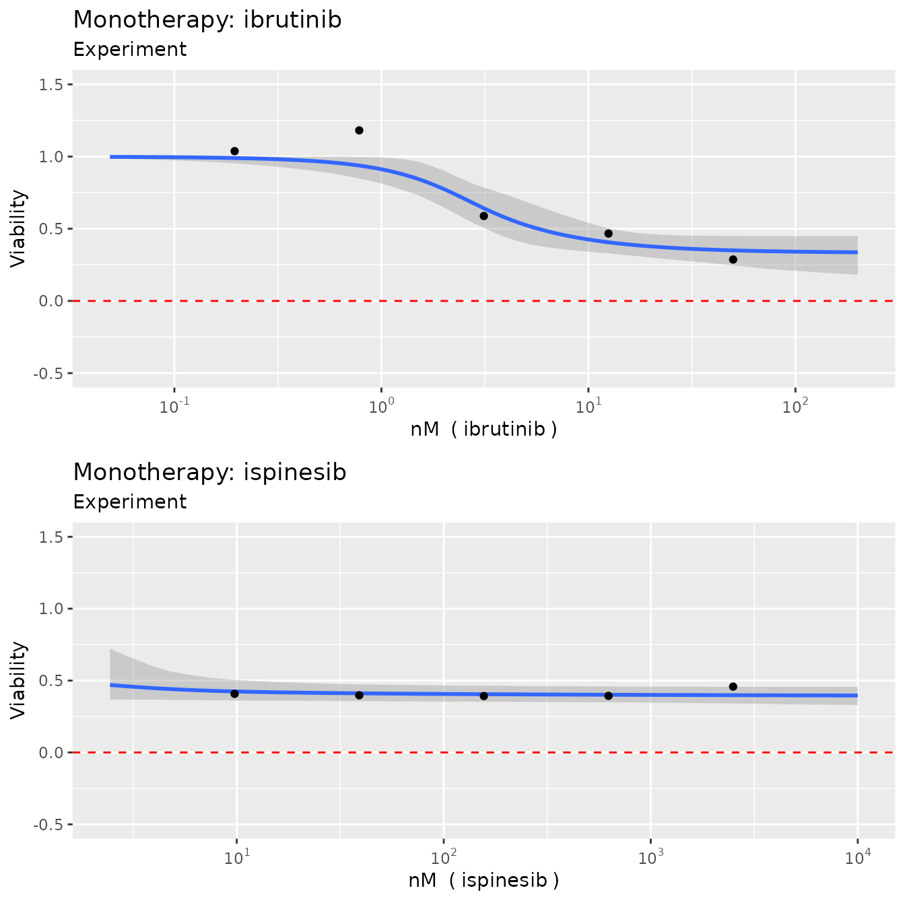
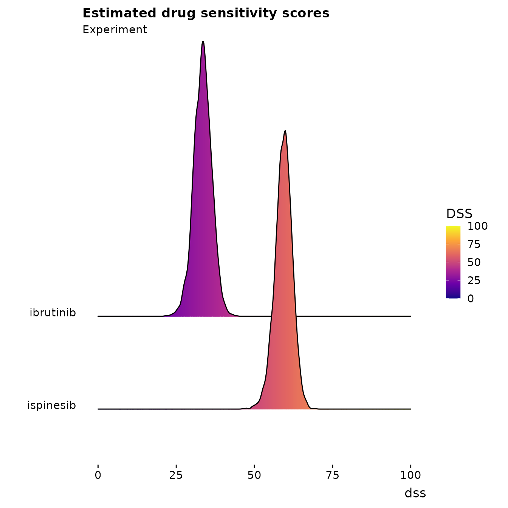
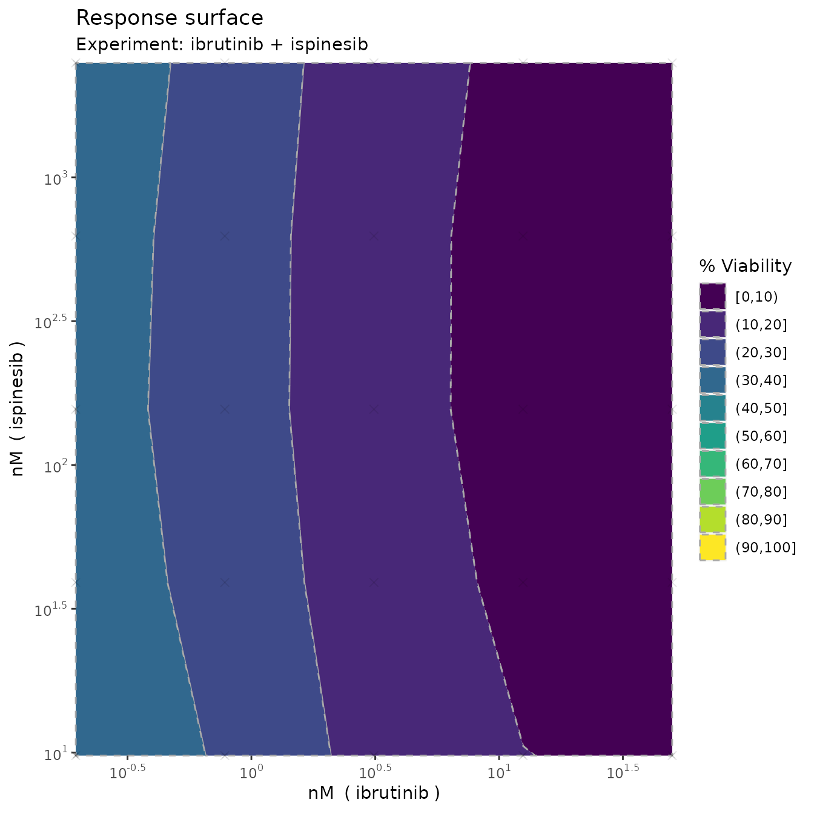
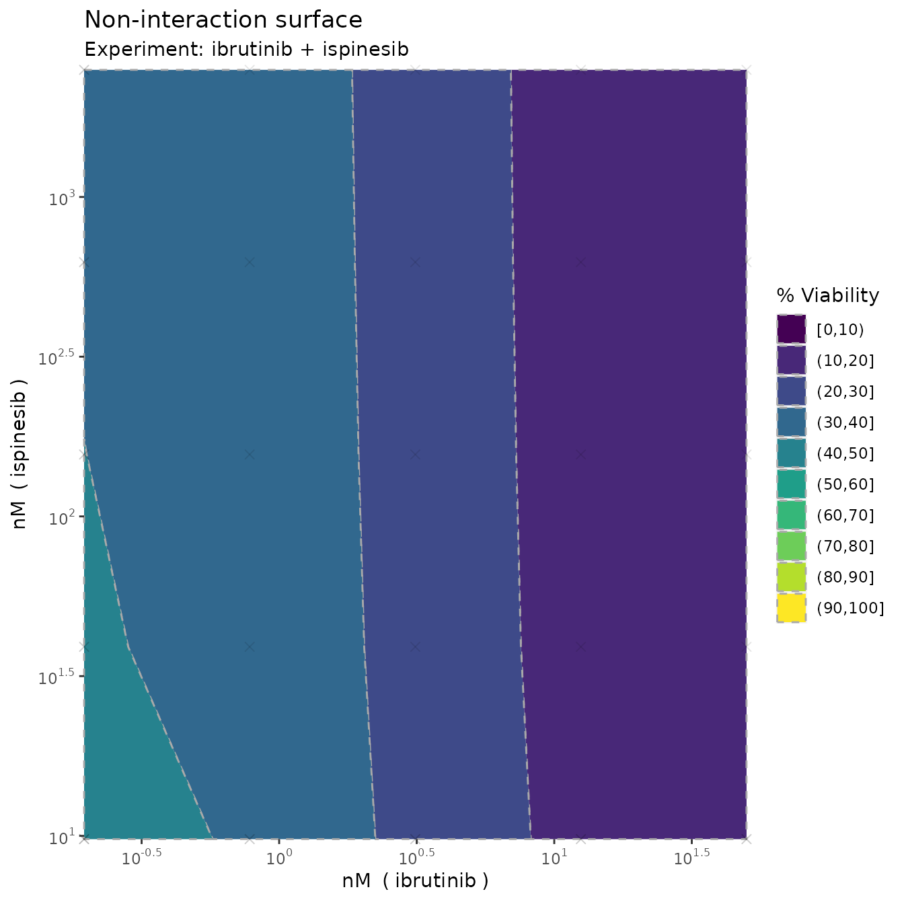
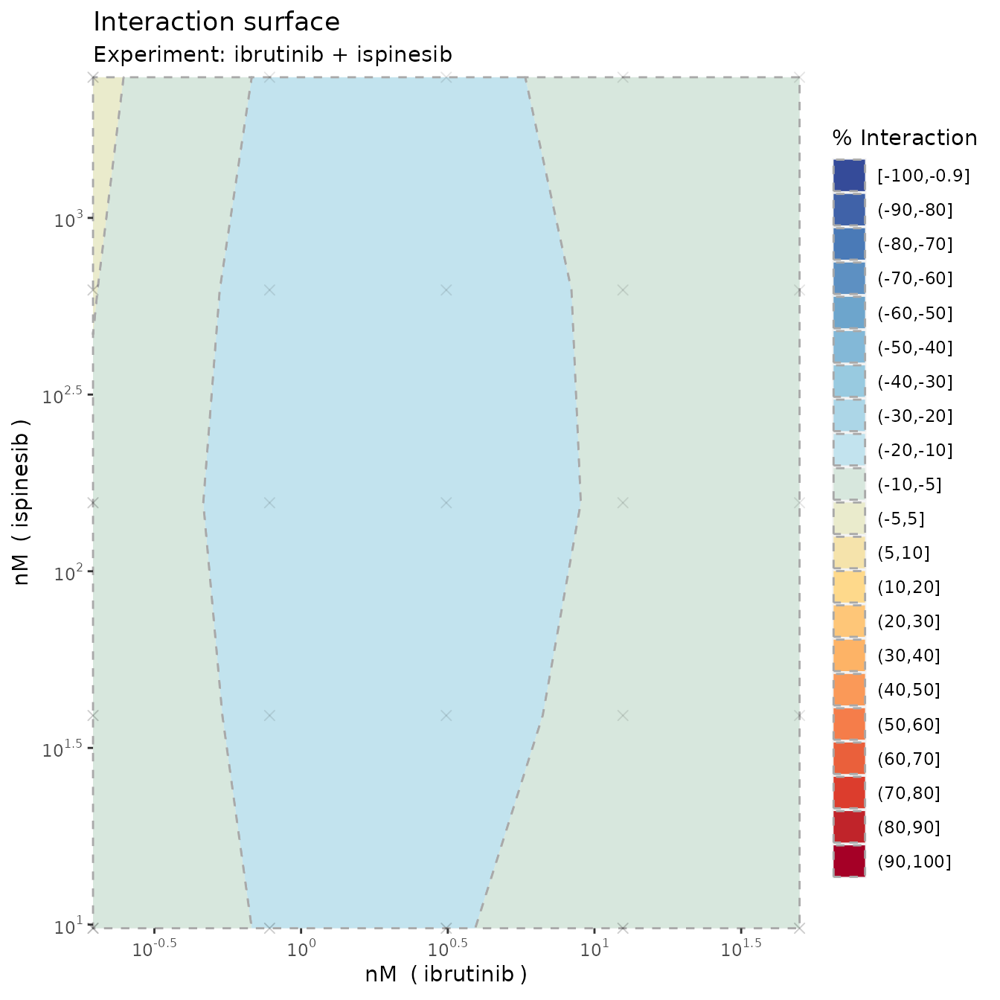
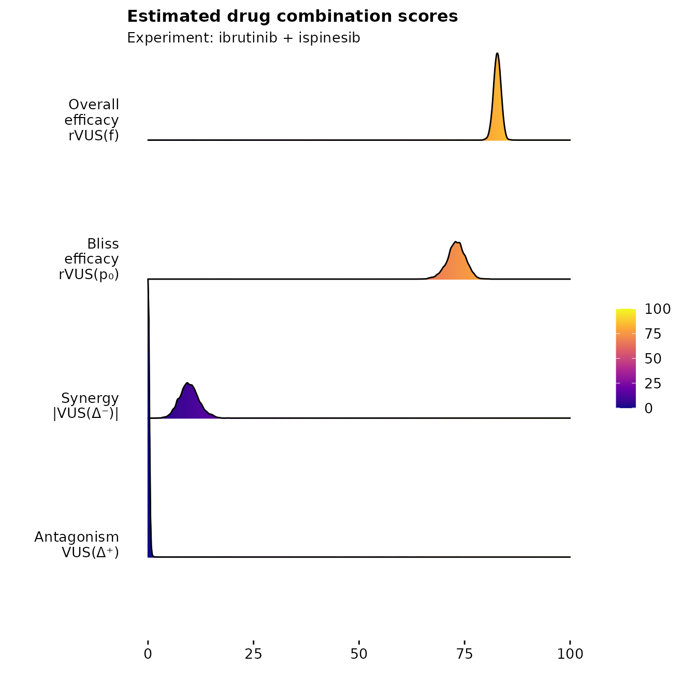

Example: Single experiment
Example_single.RmdIn the R package, we’ve attached two example datasets from a large drug combination screening experiment on diffuse large B-cell lymphoma. We’ll use these to show some simple use cases of the main functions and how to interpret the results.
Let’s load in the first example and have a look at it
library(bayesynergy)
data("mathews_DLBCL")
y = mathews_DLBCL[[1]][[1]]
x = mathews_DLBCL[[1]][[2]]
head(cbind(y,x))## Viability ibrutinib ispinesib
## [1,] 1.2295618 0.0000 0
## [2,] 1.0376006 0.1954 0
## [3,] 1.1813851 0.7812 0
## [4,] 0.5882688 3.1250 0
## [5,] 0.4666700 12.5000 0
## [6,] 0.2869514 50.0000 0We see that the the measured viability scores are stored in the
vector y, while x is a matrix with two columns
giving the corresponding concentrations where the viability scores were
read off.
Fitting the regression model is simple enough, and can be done on default settings simply by running the following code (where we add the names of the drugs involved, the concentration units for plotting purposes, and calculate the bayes factor).
fit = bayesynergy(y,x, drug_names = c("ibrutinib", "ispinesib"),
units = c("nM","nM"),bayes_factor = T)##
## SAMPLING FOR MODEL 'gp_grid' NOW (CHAIN 1).
## Chain 1:
## Chain 1: Gradient evaluation took 0.00014 seconds
## Chain 1: 1000 transitions using 10 leapfrog steps per transition would take 1.4 seconds.
## Chain 1: Adjust your expectations accordingly!
## Chain 1:
## Chain 1:
## Chain 1: Iteration: 1 / 2000 [ 0%] (Warmup)
## Chain 1: Iteration: 200 / 2000 [ 10%] (Warmup)
## Chain 1: Iteration: 400 / 2000 [ 20%] (Warmup)
## Chain 1: Iteration: 600 / 2000 [ 30%] (Warmup)
## Chain 1: Iteration: 800 / 2000 [ 40%] (Warmup)
## Chain 1: Iteration: 1000 / 2000 [ 50%] (Warmup)
## Chain 1: Iteration: 1001 / 2000 [ 50%] (Sampling)
## Chain 1: Iteration: 1200 / 2000 [ 60%] (Sampling)
## Chain 1: Iteration: 1400 / 2000 [ 70%] (Sampling)
## Chain 1: Iteration: 1600 / 2000 [ 80%] (Sampling)
## Chain 1: Iteration: 1800 / 2000 [ 90%] (Sampling)
## Chain 1: Iteration: 2000 / 2000 [100%] (Sampling)
## Chain 1:
## Chain 1: Elapsed Time: 3.23 seconds (Warm-up)
## Chain 1: 3.578 seconds (Sampling)
## Chain 1: 6.808 seconds (Total)
## Chain 1:
##
## SAMPLING FOR MODEL 'gp_grid' NOW (CHAIN 2).
## Chain 2:
## Chain 2: Gradient evaluation took 0.0001 seconds
## Chain 2: 1000 transitions using 10 leapfrog steps per transition would take 1 seconds.
## Chain 2: Adjust your expectations accordingly!
## Chain 2:
## Chain 2:
## Chain 2: Iteration: 1 / 2000 [ 0%] (Warmup)
## Chain 2: Iteration: 200 / 2000 [ 10%] (Warmup)
## Chain 2: Iteration: 400 / 2000 [ 20%] (Warmup)
## Chain 2: Iteration: 600 / 2000 [ 30%] (Warmup)
## Chain 2: Iteration: 800 / 2000 [ 40%] (Warmup)
## Chain 2: Iteration: 1000 / 2000 [ 50%] (Warmup)
## Chain 2: Iteration: 1001 / 2000 [ 50%] (Sampling)
## Chain 2: Iteration: 1200 / 2000 [ 60%] (Sampling)
## Chain 2: Iteration: 1400 / 2000 [ 70%] (Sampling)
## Chain 2: Iteration: 1600 / 2000 [ 80%] (Sampling)
## Chain 2: Iteration: 1800 / 2000 [ 90%] (Sampling)
## Chain 2: Iteration: 2000 / 2000 [100%] (Sampling)
## Chain 2:
## Chain 2: Elapsed Time: 3.848 seconds (Warm-up)
## Chain 2: 7.198 seconds (Sampling)
## Chain 2: 11.046 seconds (Total)
## Chain 2:
##
## SAMPLING FOR MODEL 'gp_grid' NOW (CHAIN 3).
## Chain 3:
## Chain 3: Gradient evaluation took 9e-05 seconds
## Chain 3: 1000 transitions using 10 leapfrog steps per transition would take 0.9 seconds.
## Chain 3: Adjust your expectations accordingly!
## Chain 3:
## Chain 3:
## Chain 3: Iteration: 1 / 2000 [ 0%] (Warmup)
## Chain 3: Iteration: 200 / 2000 [ 10%] (Warmup)
## Chain 3: Iteration: 400 / 2000 [ 20%] (Warmup)
## Chain 3: Iteration: 600 / 2000 [ 30%] (Warmup)
## Chain 3: Iteration: 800 / 2000 [ 40%] (Warmup)
## Chain 3: Iteration: 1000 / 2000 [ 50%] (Warmup)
## Chain 3: Iteration: 1001 / 2000 [ 50%] (Sampling)
## Chain 3: Iteration: 1200 / 2000 [ 60%] (Sampling)
## Chain 3: Iteration: 1400 / 2000 [ 70%] (Sampling)
## Chain 3: Iteration: 1600 / 2000 [ 80%] (Sampling)
## Chain 3: Iteration: 1800 / 2000 [ 90%] (Sampling)
## Chain 3: Iteration: 2000 / 2000 [100%] (Sampling)
## Chain 3:
## Chain 3: Elapsed Time: 3.423 seconds (Warm-up)
## Chain 3: 5.551 seconds (Sampling)
## Chain 3: 8.974 seconds (Total)
## Chain 3:
##
## SAMPLING FOR MODEL 'gp_grid' NOW (CHAIN 4).
## Chain 4:
## Chain 4: Gradient evaluation took 8.8e-05 seconds
## Chain 4: 1000 transitions using 10 leapfrog steps per transition would take 0.88 seconds.
## Chain 4: Adjust your expectations accordingly!
## Chain 4:
## Chain 4:
## Chain 4: Iteration: 1 / 2000 [ 0%] (Warmup)
## Chain 4: Iteration: 200 / 2000 [ 10%] (Warmup)
## Chain 4: Iteration: 400 / 2000 [ 20%] (Warmup)
## Chain 4: Iteration: 600 / 2000 [ 30%] (Warmup)
## Chain 4: Iteration: 800 / 2000 [ 40%] (Warmup)
## Chain 4: Iteration: 1000 / 2000 [ 50%] (Warmup)
## Chain 4: Iteration: 1001 / 2000 [ 50%] (Sampling)
## Chain 4: Iteration: 1200 / 2000 [ 60%] (Sampling)
## Chain 4: Iteration: 1400 / 2000 [ 70%] (Sampling)
## Chain 4: Iteration: 1600 / 2000 [ 80%] (Sampling)
## Chain 4: Iteration: 1800 / 2000 [ 90%] (Sampling)
## Chain 4: Iteration: 2000 / 2000 [100%] (Sampling)
## Chain 4:
## Chain 4: Elapsed Time: 3.776 seconds (Warm-up)
## Chain 4: 3.292 seconds (Sampling)
## Chain 4: 7.068 seconds (Total)
## Chain 4:
##
## SAMPLING FOR MODEL 'nointeraction' NOW (CHAIN 1).
## Chain 1:
## Chain 1: Gradient evaluation took 4.5e-05 seconds
## Chain 1: 1000 transitions using 10 leapfrog steps per transition would take 0.45 seconds.
## Chain 1: Adjust your expectations accordingly!
## Chain 1:
## Chain 1:
## Chain 1: Iteration: 1 / 2000 [ 0%] (Warmup)
## Chain 1: Iteration: 200 / 2000 [ 10%] (Warmup)
## Chain 1: Iteration: 400 / 2000 [ 20%] (Warmup)
## Chain 1: Iteration: 600 / 2000 [ 30%] (Warmup)
## Chain 1: Iteration: 800 / 2000 [ 40%] (Warmup)
## Chain 1: Iteration: 1000 / 2000 [ 50%] (Warmup)
## Chain 1: Iteration: 1001 / 2000 [ 50%] (Sampling)
## Chain 1: Iteration: 1200 / 2000 [ 60%] (Sampling)
## Chain 1: Iteration: 1400 / 2000 [ 70%] (Sampling)
## Chain 1: Iteration: 1600 / 2000 [ 80%] (Sampling)
## Chain 1: Iteration: 1800 / 2000 [ 90%] (Sampling)
## Chain 1: Iteration: 2000 / 2000 [100%] (Sampling)
## Chain 1:
## Chain 1: Elapsed Time: 0.474 seconds (Warm-up)
## Chain 1: 0.421 seconds (Sampling)
## Chain 1: 0.895 seconds (Total)
## Chain 1:
##
## SAMPLING FOR MODEL 'nointeraction' NOW (CHAIN 2).
## Chain 2:
## Chain 2: Gradient evaluation took 3.5e-05 seconds
## Chain 2: 1000 transitions using 10 leapfrog steps per transition would take 0.35 seconds.
## Chain 2: Adjust your expectations accordingly!
## Chain 2:
## Chain 2:
## Chain 2: Iteration: 1 / 2000 [ 0%] (Warmup)
## Chain 2: Iteration: 200 / 2000 [ 10%] (Warmup)
## Chain 2: Iteration: 400 / 2000 [ 20%] (Warmup)
## Chain 2: Iteration: 600 / 2000 [ 30%] (Warmup)
## Chain 2: Iteration: 800 / 2000 [ 40%] (Warmup)
## Chain 2: Iteration: 1000 / 2000 [ 50%] (Warmup)
## Chain 2: Iteration: 1001 / 2000 [ 50%] (Sampling)
## Chain 2: Iteration: 1200 / 2000 [ 60%] (Sampling)
## Chain 2: Iteration: 1400 / 2000 [ 70%] (Sampling)
## Chain 2: Iteration: 1600 / 2000 [ 80%] (Sampling)
## Chain 2: Iteration: 1800 / 2000 [ 90%] (Sampling)
## Chain 2: Iteration: 2000 / 2000 [100%] (Sampling)
## Chain 2:
## Chain 2: Elapsed Time: 0.508 seconds (Warm-up)
## Chain 2: 0.437 seconds (Sampling)
## Chain 2: 0.945 seconds (Total)
## Chain 2:
##
## SAMPLING FOR MODEL 'nointeraction' NOW (CHAIN 3).
## Chain 3:
## Chain 3: Gradient evaluation took 3.3e-05 seconds
## Chain 3: 1000 transitions using 10 leapfrog steps per transition would take 0.33 seconds.
## Chain 3: Adjust your expectations accordingly!
## Chain 3:
## Chain 3:
## Chain 3: Iteration: 1 / 2000 [ 0%] (Warmup)
## Chain 3: Iteration: 200 / 2000 [ 10%] (Warmup)
## Chain 3: Iteration: 400 / 2000 [ 20%] (Warmup)
## Chain 3: Iteration: 600 / 2000 [ 30%] (Warmup)
## Chain 3: Iteration: 800 / 2000 [ 40%] (Warmup)
## Chain 3: Iteration: 1000 / 2000 [ 50%] (Warmup)
## Chain 3: Iteration: 1001 / 2000 [ 50%] (Sampling)
## Chain 3: Iteration: 1200 / 2000 [ 60%] (Sampling)
## Chain 3: Iteration: 1400 / 2000 [ 70%] (Sampling)
## Chain 3: Iteration: 1600 / 2000 [ 80%] (Sampling)
## Chain 3: Iteration: 1800 / 2000 [ 90%] (Sampling)
## Chain 3: Iteration: 2000 / 2000 [100%] (Sampling)
## Chain 3:
## Chain 3: Elapsed Time: 0.48 seconds (Warm-up)
## Chain 3: 0.456 seconds (Sampling)
## Chain 3: 0.936 seconds (Total)
## Chain 3:
##
## SAMPLING FOR MODEL 'nointeraction' NOW (CHAIN 4).
## Chain 4:
## Chain 4: Gradient evaluation took 3.3e-05 seconds
## Chain 4: 1000 transitions using 10 leapfrog steps per transition would take 0.33 seconds.
## Chain 4: Adjust your expectations accordingly!
## Chain 4:
## Chain 4:
## Chain 4: Iteration: 1 / 2000 [ 0%] (Warmup)
## Chain 4: Iteration: 200 / 2000 [ 10%] (Warmup)
## Chain 4: Iteration: 400 / 2000 [ 20%] (Warmup)
## Chain 4: Iteration: 600 / 2000 [ 30%] (Warmup)
## Chain 4: Iteration: 800 / 2000 [ 40%] (Warmup)
## Chain 4: Iteration: 1000 / 2000 [ 50%] (Warmup)
## Chain 4: Iteration: 1001 / 2000 [ 50%] (Sampling)
## Chain 4: Iteration: 1200 / 2000 [ 60%] (Sampling)
## Chain 4: Iteration: 1400 / 2000 [ 70%] (Sampling)
## Chain 4: Iteration: 1600 / 2000 [ 80%] (Sampling)
## Chain 4: Iteration: 1800 / 2000 [ 90%] (Sampling)
## Chain 4: Iteration: 2000 / 2000 [100%] (Sampling)
## Chain 4:
## Chain 4: Elapsed Time: 0.436 seconds (Warm-up)
## Chain 4: 0.33 seconds (Sampling)
## Chain 4: 0.766 seconds (Total)
## Chain 4:## Calculating the Bayes factorThe resulting model can be summarised by running
summary(fit)## mean se_mean sd 2.5% 50% 97.5% n_eff Rhat
## la_1[1] 0.3327 0.002030 0.0754 1.55e-01 3.43e-01 0.455 1379 1.00
## la_2[1] 0.3831 0.003669 0.0699 1.14e-01 3.96e-01 0.457 363 1.01
## log10_ec50_1 0.4842 0.004285 0.1588 2.46e-01 4.48e-01 0.868 1373 1.00
## log10_ec50_2 -1.0214 0.022533 1.0396 -3.35e+00 -8.64e-01 0.485 2129 1.00
## slope_1 2.0070 0.018769 0.9094 8.53e-01 1.79e+00 4.242 2348 1.00
## slope_2 1.4638 0.023353 1.1144 8.95e-02 1.20e+00 4.380 2277 1.00
## ell 3.0573 0.031525 1.4626 1.25e+00 2.74e+00 6.551 2153 1.00
## sigma_f 0.8230 0.015463 0.8064 1.70e-01 6.00e-01 2.767 2720 1.00
## s 0.0969 0.000283 0.0151 7.30e-02 9.49e-02 0.132 2851 1.00
## dss_1 33.4547 0.043492 2.9305 2.75e+01 3.35e+01 39.028 4540 1.00
## dss_2 59.4281 0.047148 2.7633 5.37e+01 5.95e+01 64.632 3435 1.00
## rVUS_f 82.7376 0.013881 0.8703 8.10e+01 8.27e+01 84.419 3931 1.00
## rVUS_p0 73.0236 0.035422 2.1692 6.84e+01 7.31e+01 77.097 3750 1.00
## VUS_Delta -9.7139 0.036606 2.3281 -1.47e+01 -9.65e+00 -5.349 4045 1.00
## VUS_syn -9.7625 0.036161 2.2869 -1.47e+01 -9.68e+00 -5.538 3999 1.00
## VUS_ant 0.0486 0.001903 0.1143 4.71e-06 8.53e-05 0.364 3607 1.00
##
## log-Pseudo Marginal Likelihood (LPML) = 52.45587
## Estimated Bayes factor in favor of full model over non-interaction only model: 31.65008which gives posterior summaries of the parameters of the model.
In addition, the model calculates summary statistics of the
monotherapy curves and the dose-response surface including drug
sensitivity scores (DSS) for the two drugs in question, as well as the
volumes that capture the notion of efficacy (rVUS_f),
interaction (VUS_Delta), synergy (VUS_syn) and
interaction (VUS_ant).
As indicated, the total combined drug efficacy is around 80%
(rVUS_f), of which around 70 percentage points can be
attributed to \(p_0\)
(rVUS_p0), leaving room for 10 percentage points worth of
synergy (VUS_syn). We can also note that the model is
fairly certain of this effect, with a 95% credible interval given as
(-14.688, -5.538). The certainty of this is also verified by the Bayes
factor, which at 31.65 indicates strong evidence of an interaction
effect present in the model.
Visualization
Monotherapy curves, 2D contour plots
We can also create plots by simply running
plot(fit, plot3D = F)
which produces monotherapy curves, monotherapy summary statistics, 2D contour plots of the dose-response function \(f\), the non-interaction assumption \(p_0\) and the interaction \(\Delta\). The last plot displays the \(rVUS\) scores as discussed previously, with corresponding uncertainty.